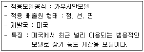
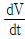
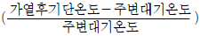
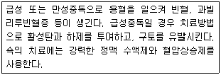
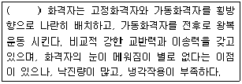
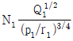
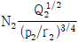
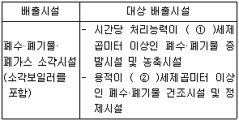
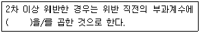
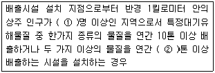

대기환경기사 (2011-06-12 기출문제)
1과목: 대기오염 개론
1. 다음 특정물질 중 오존 파괴지수가 가장 큰 것은?
- Halon-1211
- Halon-1301
- CCl4
- HCFC-22
(정답률: 86%)

2. 다음 설명하는 대기분산모델로 가장 적합한 것은?

- RAMS
- ISCLT
- UAM
- AUSPLUME
(정답률: 80%)
3. 다음 각 오염물질이 인체에 미치는 영향으로 옳지 않은 것은?
- 탈리움(Thallium)의 수용성 염은 위장관, 피부, 호흡기를 통해 쉽게 흡수되고, 배설은 장관과 신장을 통해 비교적 느리게 일어난다.
- 알루미늄은 에피네프린에 의해 유도되는 수축을 방해하여 위장관의 운동을 느리게 하고, 알루미늄-펙틴 화합물의 형성으로 콜레스테롤의 흡수를 방해한다.
- 셀레늄의 만성적인 기중폭로 시 결막염을 일으키는데 이것을 "Rose Eye"라고 부른다.
- 바나듐에 폭로된 사람들에게서는 혈장 콜레스테롤치가 저하된다.
(정답률: 54%)
4. 질소산화물(NOx)에 관한 설명 중 옳지 않은 것은?
- NO와 NO2에 비해 N2O가 장기간 대기중에 체류한다.
- NO2는 해안지역에서는 해염입자와 반응하여 질산염을 생성하며 대기중에서 제거된다.
- N2O는 성층권에서는 오존을 분해하는 물질로 알려져 있다.
- N2O는 대류권에서는 태양에너지에 대하여 매우 불안정하다.
(정답률: 65%)
5. 입자상물질의 농도가 250㎍/m3이고, 상대습도가 70%인 상태의 대도시에서의 가시거리는 몇 km인가? (단, 계수 A는 1.3으로 한다.)
- 4.3km
- 5.2km
- 6.5km
- 7.2km
(정답률: 81%)
6. 가우시안 모델의 대기오염 확산방정식을 적용할 때 지면에 있는 오염원으로부터 바람부는 방향으로 200m 떨어진 연기의 중심축상 지상 오염농도(mg/m3)는? (단, 오염물질의 배출량은 6g/sec, 풍속은 3.5m/sec, δy , δz는 각각 22.5m , 12m 이다.)
- 0.96
- 1.41
- 2.02
- 2.46
(정답률: 63%)
7. 다음 식물 중 에틸렌가스에 대한 식물의 저항성이 가장 큰 것은?
- 완두
- 스위트피
- 양배추
- 토마토
(정답률: 72%)
8. 역전에 관한 설명 중 옳지 않은 것은?
- 전선역전층이나 해풍역전층은 모두 이동성이지만 그 상하에서 바람과 난류가 작아서 지표부근의 오염물질들을 오랫동안 정체시킨다.
- 복사역전층에서는 안개가 발생하기 쉽고 매연이 소산되기 어려워 지표부근의 오염농도가 커진다.
- 복사역전은 하늘이 맑고 바람이 약한 자정 이후와 새벽에 걸쳐 잘 생기며, 낮이 되면 일사에 의해 지면이 가열되므로 곧 소멸된다.
- 산을 넘는 푄기류가 산골짜기로 통과할 때 발생하는 지형성 역전도 있으며, 이 역전층은 산골짜기, 분지 등으로 냉기가 모일 경우 발생한다.
(정답률: 69%)
9. 대기의 구조는 균질층과 이질층으로 구분할 수 있다. 이에 관한 설명으로 옳지 않은 것은?
- 지상 0 - 88km 정도까지의 균질층은 수분을 제외하고는 질소 및 산소 등 분자 조성비가 어느 정도 일정하다.
- 균질층내의 공기는 건조가스로서 지상 0 - 30km 정도까지 공기의 98% 정도가 존재하고 있다.
- 이질층은 보통 4개층으로 분류되며 지상 1120-3600km는 산소원자층이라 한다.
- 이질층내의 공기는 강한 산화력으로 인하여 지상에서 발생되어 상승한 이물질들을 산화, 소멸시킨다.
(정답률: 67%)
10. CO2 해당 배출량을 계산하는데 이용되는 온실가스별 지구 온난화지수( Global Warming Potential) 가 맞게 짝지어진 것은?
- N2O = 1300
- PFCs = 15250
- SF6 = 2390
- CH4 = 21
(정답률: 69%)
11. 최대혼합고에 관한 설명으로 가장 거리가 먼 것은?
- 열부력 효과에 의해 결정된 대류혼합층의 높이를 최대혼합고라 한다.
- 가열되지 않은 기단과 주위의 대기를 이상기체라고 하면 대기 중에서 기단이 가열에 의해 위로 가속될 때 기단의 가속도식은

=
× 중력가속도 로 볼 수 있다. - 최대혼합고는 통상적으로 밤에 가장 높으며 낮시간 동안 감소한다.
- 최대혼합고 값이 1500m 이하인 경우에 대도시 지역에서의 대기오염이 심화된다는 보고가 있다.
(정답률: 77%)
12. 오존에 관한 설명으로 가장 거리가 먼 것은?
- 대기 중 오존의 배경농도는 0.01-0.02ppm 정도이다.
- 청정지역의 오존농도의 일변화는 도시지역보다 매우 크므로 대기 중 NO, NO2 농도변화에 따른 오존의 광화학적 생성과 소멸을 밝히기에 유리하다.
- 도시나 전원지역의 대기 중 오존농도는 가끔 NO2의 광해리에 의해 생성될 때보다 높은 경우가 있는데 이는 오존을 소모하지 않고 NO가 NO2로 산화되기 때문이다.
- 대류권에서 오존의 생성율은 과산화기의 농도와 관계가 깊다.
(정답률: 57%)
13. 180℃, 1atm에서 이산화황 2g/m3 이다. 표준상태에서는 몇 ppm 인가?
- 423
- 1162
- 1543
- 2116
(정답률: 56%)
14. 다음 중 SO2가 주 오염물질로 작용한 대기오염 피해사건으로 가장 거리가 먼 것은?
- London Smog 사건
- Poza Rica 사건
- Donora 사건
- Muse Valley 사건
(정답률: 77%)
15. 대기오염물질이 인체 및 동물에 미치는 영향에 관한 설명으로 옳지 않은 것은?
- NO는 NO2보다 독성이 강하고, 대기 농도 수준에서 인체에 큰 영향을 미친다.
- Pb은 혈액 헤모글로빈의 기본요소인 포르피린 고리의 형성을 방해함으로써 헤모글로빈의 형성을 억제한다.
- Be(베릴륨)은 독성이 강하고, 폐포에 축적되어 베릴리오시스를 생성, 쥐에게서는 심각한 병과 발암성이 나타난다.
- 아황산가스는 물에 대한 용해도가 매우 높기 때문에 흡입된 대부분의 가스가 상기도 점막에서 흡수된다.
(정답률: 53%)
16. 다음 중 C6H5OH 배출과 관련된 업종으로 가장 거리가 먼 것은?
- 정련공업
- 화학공업
- 타르공업
- 도장공업
(정답률: 57%)
17. 다음 설명하는 오염물질에 해당하는 것은?

- 비소
- 망간
- 수은
- 크롬
(정답률: 52%)
18. 지균풍에 관한 설명으로 가장 거리가 먼 것은?
- 대기경계층 상부, 즉 고도 1km 이상의 상공에서 등압선이 직선일 때 등압선과 평행하게 부는 바람이다.
- 고공풍이므로 마찰력의 영향이 거의 없다.
- 지균풍에 영향을 주는 기압경도력과 전향력은 크기가 같고 방향이 반대이다.
- 등압선이 평행인 경우 북반구에서는 관측자가 지구를 향하여 내려다보는 경우 저기압지역이 풍향의 오른쪽에 위치한다.
(정답률: 51%)
19. 가우시안(Gaussian) 모델에서의 표준편차 (δy, δz)에 관한 설명으로 가장 거리가 먼 것은?
- δy, δz 값의 성립조건으로 시료채취기간은 약 5분이다.
- δy, δz 값은 대기의 안정상태와 풍하거리 X의 함수이다.
- δy, δz 는 평탄한 지형에 기준을 두고 있다.
- δy, δz 는 고도에 따라 변하므로 고도는 대기 중에서 하부 수백 m에 국한된다.
(정답률: 66%)
20. 지상으로부터 500m까지의 평균 기온감율이 0.85℃/100m 이다. 100m 고도의 기온이 15℃라 하면 300m 에서의 기온은?
- 13.30℃
- 12.45℃
- 11.45℃
- 10.45℃
(정답률: 67%)
2과목: 연소공학
21. 다음 액체연료 C/H 비의 순서로 옳은 것은? (단, 큰 순서 ＞작은 순서)
- 중유 ＞등유 ＞경유 ＞휘발유
- 중유 ＞경유 ＞등유 ＞휘발유
- 휘발유 ＞등유 ＞경유 ＞중유
- 휘발유 ＞경유 ＞등유 ＞중유
(정답률: 71%)
22. 액체연료의 성분 분석결과 탄소 79%, 수소 14%, 황 3.5%, 산소 2.2%, 수분 1.3% 이었다면 이 연료의 저위발열량은? (단, Dulong 식 적용)
- 약 9100 kcal/kg
- 약 9700 kcal/kg
- 약 10400 kcal/kg
- 약 11200 kcal/kg
(정답률: 43%)
23. 액체연료의 연소방식에 관한 설명으로 옳지 않은 것은?
- 심지식 연소는 기화 연소방식에 속하며, 주로 등유 연소장치에서 심지의 모세관 현상에 의해 증발연소 시키는 방식으로 점화 및 소화 시 공기와 혼합이 나빠 그을음 및 악취가 발생한다.
- 포트식 연소는 분무화 연소방식에 해당하며 휘발성이 좋지 않은 중질유 연소에 효과적이다.
- 충돌 분무화식에서 분무화 입경은 연료의 점도와 표면장력이 클수록 커지므로 분무화 입경을 작게 하기 위해서는 연료를 85±5℃ 정도로 예열해야 한다.
- 이류체 분무화식은 증기 또는 공기의 분무화 매체를 사용하여 분무화시키는 방식이다.
(정답률: 44%)
24. 내용적 160m3의 밀폐된 실내에서 부탄 2.23kg을 완전연소 시 실내의 산소농도(V/V%)는? (단, 표준상태이며, 기타조건은 무시하며, 공기 중 용적산소비율은 21%)
- 15.6%
- 17.5%
- 19.4%
- 20.8%
(정답률: 47%)
25. 가연성 가스의 폭발범위에 따른 위험도 증가 요인으로 가장 적합한 것은?
- 폭발하한농도가 낮을수록 위험도가 증가하며, 폭발상한과 폭발하한의 차이가 클수록 위험도가 커진다.
- 폭발하한농도가 낮을수록 위험도가 증가하며, 폭발상한과 폭발하한의 차이가 작을수록 위험도가 커진다.
- 폭발하한농도가 높을수록 위험도가 증가하며, 폭발상한과 폭발하한의 차이가 클수록 위험도가 커진다.
- 폭발하한농도가 높을수록 위험도가 증가하며, 폭발상한과 폭발하한의 차이가 작을수록 위험도가 커진다.
(정답률: 69%)
26. A중유의 원소조성이 C 85%, H 10%, S 2%, O 3% 이었다. 이 중유 100kg을 완전연소 시키는데 필요한 이론공기량(Sm3)은?
- 215
- 515
- 1019
- 1219
(정답률: 52%)
27. 기체연료와 공기를 혼합하여 연소할 경우 다음 중 연소속도가 가장 큰 것은? (단, 대기압 , 25℃ 기준)
- 메탄
- 수소
- 프로판
- 아세틸렌
(정답률: 66%)
28. 프로판 2kg을 과잉공기계수 1.31로 완전 연소시킬 때 발생하는 습연소가스량(kg)은?
- 약 24kg
- 약 32kg
- 약 38kg
- 약 43kg
(정답률: 30%)
29. Methane 1mole 이 공기비 1.2로 연소하고 있을 때 부피기준의 공연비(Air Fuel Ratio)는?
- 9.5
- 11.4
- 17.1
- 22.8
(정답률: 62%)
30. 다음 알콜연료 중 에테르, 아세톤, 벤젠 등 많은 유기물질을 용해하며, 무색의 독특한 냄새를 가지고, 모두 8종의 이성체가 존재하는 것은?
- 에탄올(C2H5OH)
- 프로판올(C3H7OH)
- 부탄올(C4H9OH)
- 펜탄올(C5H11OH)
(정답률: 71%)
31. 석탄의 탄화도 증가에 따라 감소하는 것은?
- 발열량
- 고정탄소
- 착화온도
- 비열
(정답률: 71%)
32. 옥탄가 (Octane Number)에 관한 설명으로 옳지 않은 것은?
- Iso-Octane 과 n-Octane, Neo-Octane 의 혼합표준연료의 노킹정도와 비교하여 공급가솔린과 동등한 노킹정도를 나타내는 혼합표준연료 중의 Iso-Octane(%)를 말한다.
- N-Paraffine에서는 탄소수가 증가할 수록 옥탄가가 저하하여 C7에서 옥탄가는 0이다.
- Iso-Paraffine에서는 Methyl측쇄가 많을수록, 특히 중앙부에 집중할수록 옥탄가는 증가한다.
- 방향족 탄화수소의 경우 벤젠고리의 측쇄가 C3까지는 옥탄가가 증가하지만 그 이상이면 감소한다.
(정답률: 50%)
33. 연소 배출가스 분석결과 CO2 11.9% , O2 7.1% 일 때 과잉공기계수는 약 얼마인가?
- 1.2
- 1.5
- 1.7
- 1.9
(정답률: 54%)
34. 액화석유가스에 관한 설명으로 옳지 않은 것은?
- 황분이 적고 독성이 없다.
- 비중이 공기보다 가볍고, 누출될 경우 쉽게 인화 폭발할 수 있다.
- 발열량은 20000-30000 kcal/Sm3 정도로 매우 높다.
- 유지 등을 잘 녹이기 때문에 고무 패킹이나 유지로 갠 도포제로 누출을 막는 것은 곤란하다.
(정답률: 79%)
35. 다음은 쓰레기 이송방식에 따라 가동화격자(Moving Stoker)를 분류한 것이다. ( )안에 가장 알맞은 것은?

- 직렬식
- 병렬요동식
- 부채 반전식
- 회전 로울러식
(정답률: 75%)
36. 294m3 되는 방에서 문을 닫고 91%의 탄소를 가진 숯을 최소 몇 kg 이상을 태우면 해로운 상태가 되겠는가? (단, 표준상태를 기준으로 하며, 공기 중에 탄산가스의 부피가 5.8% 이상일 때 , 인체에 해롭다고 한다. )
- 약 10
- 약 12
- 약 14
- 약 16
(정답률: 33%)
37. 예혼합 연소에 사용되는 버너 중 역화방지를 위해 1차공기량을 이론공기량의 약 60% 정도만 흡입하고 2차 공기는 로내의 압력을 부압(-)으로 하여 공기를 흡인하는 방식으로 가정용 및 소형 공업용으로 많이 사용되는 것은?
- 고압버너
- 선회버너
- 송풍버너
- 저압버너
(정답률: 59%)
38. 유동층 소각로에 관한 설명으로 옳지 않은 것은?
- 유동매체의 열용량이 커서 액상물질과 고형물질 등 여러 가지 종류의 혼합연소가 가능하다.
- 연소효율이 높아 미연분의 생성량이 적어 회분매립으로 인한 2차 공해가 감소된다.
- 매체를 유동시키기 위한 과잉공기(50-80%)가 다량 소비되어 연소배출 가스량이 많다.
- 대형의 고형폐기물은 로내로 투입 전 파쇄(전처리) 하여야 한다.
(정답률: 50%)
39. 매연발생에 관한 설명으로 옳지 않은 것은?
- 분해가 쉽거나 산화하기 쉬운 탄화수소는 매연발생이 적다.
- 탈수소, 중합 및 고리화합물 등과 같은 반응이 일어나기 어려운 탄화수소일수록 매연발생이 쉽다.
- -C-C-의 탄소결합을 절단하기보다 탈수소가 쉬운 쪽이 매연이 생기기 쉽다.
- 연료의 C/H의 비율이 클수록 매연이 생기기 쉽다.
(정답률: 62%)
40. 연료 중 황함량이 3%인 중유를 연소시킨 후 이 연소 배출가스 중의 황산화물을 제거하기 위하여 배연탈황장치를 사용하고 있다. 배연탈황장치의 성능은 배출가스중의 SO3 100%와 SO2 80%를 제거할 수 있다. 탈황 후의 연소 배출가스 중의 SO2 농도(ppm)는? (단, 연소 배출가스량은 15Sm3/kg, 연료 중 황의 5%는 SO3로 되고, 나머지는 SO2로 산화된다.)
- 266
- 324
- 358
- 495
(정답률: 24%)
3과목: 대기오염 방지기술
41. 전기집진장치의 유지관리에 관한 사항으로 가장 거리가 먼 것은?
- 운전시에 2차 전류가 매우 적을 때는 조습용 스프레이의 수량을 줄여 겉보기 전기저항을 높여야 한다.
- 운전시에 1차 전압이 낮은데도 과도한 2차 전류가 흐를 때는 고압회로의 절연불량인 경우가 많다.
- 시동시에는 배출가스를 도입하기 최소 6시간 전에 애관용 히터를 가열하여 애자관 표면에 수분이나 먼지의 부착을 방지한다.
- 정지시에는 접지저항을 년 1회 이상 점검하고, 10Ω 이하로 유지한다.
(정답률: 62%)
42. 입구먼지농도가 12g/m3, 배출가스 유량이 300m3/min인 함진가스를 여재비 3m3/m2·min 인 여과집진장치로 집진한 결과 집진효율은 98% 이었다. 압력손실이 200mmH2O에서 집진한다면 탈진주기(min)는? (단, ΔP= K1Vf + K2CiVf2ηt를 이용하고, K1= 59.8mmH2O/(m/min) , K2= 127mmH2O/(kg/m·min)이다.)
- 1.53
- 2.86
- 5.53
- 7.33
(정답률: 32%)
43. 1기압, 20℃ 일 때 공기 동점성계수 ν= 1.5×10-5 m2/sec이다. 관의 지름 50mm로 하면 그 관로의 풍속(m/sec)은? (단, 레이놀즈 수는 3.5×104 이다.)
- 4.0
- 6.5
- 9.0
- 10.5
(정답률: 48%)
44. 액측 저항이 클 경우에 이용하기 유리한 가스 분산형 흡수장치는?
- 충전탑
- 다공판탑
- 분무탑
- 하이드로필터
(정답률: 62%)
45. 가스가 송풍관 내를 통과할 때 발생되는 압력손실에 관한 설명으로 옳지 않은 것은?
- 중력가속도에 반비례
- 가스밀도에 비례
- 관의 내경에 비례
- 가스유속의 제곱에 비례
(정답률: 63%)
46. 다음 중 물을 가압 공급하여 함진가스를 세정하는 방식의 가압수식 스크러버에 해당하지 않는 것은?
- Venturi Scrubber
- Impulse Scrubber
- Packed Tower
- Jet Scrubber
(정답률: 68%)
47. 다음 악취물질 중 공기 중의 최소 감지 농도가 가장 낮은 것은?
- 암모니아
- 염소
- 황화수소
- 이황화탄소
(정답률: 67%)
48. 입경측정방법 중 관성충돌법 (Cascade Impactor 법)에 관한 설명으로 옳지 않은 것은?
- 관성충돌을 이용하여 입경을 간접적으로 측정하는 방법이다.
- 입자의 질량크기분포를 알 수 있다.
- 되튐으로 인한 시료의 손실이 일어날 수 있다.
- 시료채취가 용이하고 채취준비에 시간이 걸리지 않는 장점이 있다.
(정답률: 69%)
49. 처리가스량 30000m3/hr , 압력손실 300mmH2O인 집진장치의 송풍기 소요동력은 몇 kW가 되겠는가? (단, 송풍기의 효율은 47%)
- 약 38kW
- 약 43kW
- 약 49kW
- 약 52kW
(정답률: 42%)
50. 사이클론에 관한 설명으로 가장 거리가 먼 것은?
- 반전형은 입구유속이 10m/sec 전후이며, 접선유입식에 비해 압력손실이 적다.
- 접선유입식 사이클론의 입구유속은 2-5m/sec 범위로, 이 속도범위가 집진효율에 미치는 영향은 크다.
- 멀티사이클론은 처리가스량이 많고 높은 집진효율을 필요로 하는 경우에 사용한다.
- 반전형은 blow down이 필요없고, 함진가스 입구의 안내익 (Aerodynamic Vane)에 따라 집진효율이 달라진다.
(정답률: 43%)
51. 황함량 2.5%인 중유를 1시간에 20ton 연소하고 있는 공장에서 배연탈황시설을 실시하고 있다. 이 시설에서 부산물을 석고(CaSO4)로 회수하려고 하는 경우 회수되는 석고의 이론량(ton/hr)은? (단, 이 장치의 탈황율은 90% 이고, Ca 원자량 ; 40)
- 1.2
- 1.9
- 2.3
- 2.8
(정답률: 42%)
52. 여과집진장치의 탈진방식 중 연속식에 관한 설명으로 옳지 않은 것은?
- 역제트기류 분사형과 충격제트기류 분사형이 있다.
- 탈진시 먼지의 재비산 발생이 적어 간헐식에 비해 집진율이 높다.
- 고농도, 대용량의 가스를 처리할 수 있다.
- 포집과 탈진이 동시에 이루어지므로 압력손실이 거의 일정하다.
(정답률: 48%)
53. 전기집진장치의 특성으로 가장 거리가 먼 것은?
- 초기 설치비용이 높다
- 압력손실이 적은 편이다.
- 대량가스의 처리가 가능하다.
- VOC의 제거효율이 높으며, 전압변동에 따른 조건변동에 유리하다.
(정답률: 63%)
54. 어떤 팬(Fan)이 1650rpm으로 회전할 때 전압은 150mmAq, 풍량은 220m3/min이다. 이것과 상사인 팬을 만들어 1450rpm에서 전압을 195mmAq로 할 때 풍량(m3/min)은? (단,

=
이용)- 228 m3/min
- 354 m3/min
- 422 m3/min
- 626 m3/min
(정답률: 46%)
55. 흡착제에 관한 설명으로 옳지 않은 것은?
- 활성탄은 분자 모세관 응축현상에 의해 흡착한다.
- 활성탄은 유기용제 회수, 악취제거, 가스 정화 등에 사용된다.
- 실리카겔은 350℃ 이상에서 유기물을 잘 흡착하며 황산용액 중의 불순물 제처에 주로 이용된다.
- 활성알루미나는 물과 유기물을 잘 흡착하여 175~325℃로 가열하여 재생시킬 수 있다.
(정답률: 68%)
56. 응집(coagulation)에 관한 설명으로 가장 거리가 먼 것은?
- 바람부는 날의 구름속의 입자는 맑은 날보다 더 응집이 어렵고, 큰 입자와 작은 입자 간의 응집현상은 쉽게 응집되지 않으므로 장기간에 걸쳐 진행된다.
- 브라운 운동이 대기의 온도와 관련될 때 일어나는 응집 현상을 열응집이라 한다.
- 중력응집은 크기가 다른 입자들의 침전속도가 다르기 때문에 일어나는 응집으로 강우에 큰 영향을 미친다.
- 고체 먼지는 구형이나 기타 여러 가지 불규칙적인 형상을 가지며, 최초에 구형이었던것도 응집에 의해 비구형이 될 수도 있다.
(정답률: 51%)
57. 배출가스 중의 NOx 제거법에 관한 설명으로 옳지 않은 것은?
- 선택적 촉매환원법의 최적온도 범위는 700~850℃ 정도이며, 보통 50% 정도의 NOx를 저감시킬 수 있다.
- 선택적 촉매환원법은 TiO2와 V2O5를 혼합하여 제조한 촉매에 NH3, H2, CO, H2S 등의 환원가스를 작용시켜 NOx를 N2로 환원시키는 방법이다.
- 비선택적인 촉매환원에서는 NOx뿐만 아니라, O2까지 소비된다.
- 배출가스 중의 NOx제거는 연소조절에 의한 제어법보다 더 높은 NOx 제거효율이 요구되는 경우나 연소방식을 적용할 수 없는 경우에 사용된다.
(정답률: 61%)
58. A전기집진장치의 집진면적비 A/Q가 20m2/(1000m3/hr)일 대 집진효율은 90% 이었다. 이 전기집진장치의 집진면적비를 40m2/(1000m3/hr)으로 할 때 예상되는 집진효율(%)은? (단, Deutsch - Anderson식을 이용하여 계산하고, 기타조건의 변화는 없다. )
- 약 92%
- 약 94%
- 약 97%
- 약 99%
(정답률: 37%)
59. 다음 중 액가스비가 가장 크고, 수량이 많아 동력비가 많이 들며, 가스량이 많을 때는 불리한 흡수장치는 ?
- Packed Tower
- Cyclone Scrubber
- Venturi Scrubber
- Jet Scrubber
(정답률: 53%)
60. 후드의 형식 중 외부식 후드에 해당하지 않는 것은?
- 캐노피형(Canopy 형)
- 슬로트형(Slot 형)
- 그리드형(Grid 형)
- 루버형(Louver 형)
(정답률: 59%)
4과목: 대기오염 공정시험기준(방법)
61. 굴뚝 배출가스 중 염화수소 분석을 위한 시료채취조작으로 옳지 않은 것은?
- 질산은 적정법, 티오시안산제이수은법 및 이온전극법의 경우는 용량 250mL의 흡수병에 흡수액 50mL를 각각 넣고 이온크로마토그래프법의 경우는 용량 100mL의 흡수병에 흡수액 25mL를 넣는다.
- 삼방코크를 바이패스용 세척병 방향으로 돌린 후 , 흡인펌프를 작동시켜 시료가스 채취관로부터 코크까지를 시료가스로 치환한다.
- 흡인펌프를 정지시킨 후 삼방코크를 흡수병 반대방향으로 돌리고 가스미터의 지시값을 0.1L 자리수까지 읽어 취한다.
- 흡인펌프를 작동시켜 시료가스를 흡수병으로 흘려보낼 때 유량조절용 코크를 조절하여 유량을 1L/min 정도로 한다.
(정답률: 41%)
62. 환경대기 중 아황산가스 농도를 파라로자닐린법 (Pararosaniline Method)을 이용하여 측정할 경우 주요 방해물질로 가장 거리가 먼 것은?
- Fe
- Mn
- Pt
- Cr
(정답률: 63%)
63. 화학분석 일반사항에 관한 규정으로 옳은 것은?
- 방울수라 함은 20℃에서 정제수 20방울을 떨어뜨릴 때 그 부피가 약 10mL 되는 것을 뜻한다.
- 기밀용기라 함은 물질을 취급 또는 보관하는 동안에 기체 또는 미생물이 침입하지 않도록 내용물을 보호하는 용기를 뜻한다.
- "감압" 또는 "진공"이라 함은 따로 규정이 없는 한 15mmHg이하를 뜻한다.
- 시험조작 중 "즉시"란 10초 이내에 표시된 조작을 하는 것을 뜻한다.
(정답률: 65%)
64. 다음 중 디에틸아민동 용액에서 시료가스를 흡수시켜 생성된 디에틸디티오카바민산동의 흡광도를 435nm의 파장에서 측정하는 항목은?
- CS2
- H2S
- HCN
- PAH
(정답률: 66%)
65. 다이옥신류 측정시 시료채취용 내부표준 물질로 사용되는 물질은? (단, 가스크로마토그래프/질량분석계(GC/MS)에 의한 분석방법 기준)
- 13Cl12 - 2, 3, 7, 8 - T4CDF
- 13Cl12 - 2, 3, 7, 8 - T4CDD
- 37Cl4 - 2, 3, 7, 8 - T4CDF
- 37Cl4 - 2, 3, 7, 8 - T4CDD
(정답률: 60%)
66. 하이볼륨 에어샘플러를 사용하여 비산먼지를 측정하고자 한다. 풍속이 0.5m/sec 미만 또는 10m/sec 이상되는 시간이 전 채취시간의 50% 미만일 때 풍속에 대한 보정계수는?
- 0.8
- 1.0
- 1.2
- 1.5
(정답률: 65%)
67. 굴뚝 배출가스 중의 이황화탄소 분석방법에 관한 설명으로 옳지 않은 것은?
- 흡광광도법은 흡광도를 435nm의 파장에서 측정한다.
- 흡광광도법은 시료가스채취량 10L인 경우 배출가스 중의 이황화탄소 농도 3~60V/Vppm의 분석에 적합하다.
- 가스크로마토그래프법은 Flame Photometric Detector를 구비한 가스크로마토그래프를 사용하여 정량한다.
- 가스크로마토그래프법에서 운반가스는 순도 99.99% 이상의 아르곤 또는 순도 99.8% 이상의 질소를 사용한다.
(정답률: 52%)
68. 굴뚝 배출가스량이 125Sm3/h이고, HCl 농도가 200ppm 일 때, 5000L 물에 2시간 흡수시켰다. 이 때 이 수용액의 pOH는? (단, 흡수율은 60%이다.)
- 8.5
- 9.3
- 10.4
- 13.3
(정답률: 40%)
69. 이온크로마토그래프에서 사용되는 검출기 중 정전위 전극반응을 이용하고. 검출 감도가 높고 선택성이 있어 분석화학 분야에 널리 이용되는 검출기는?
- 가시선 흡수 검출기
- 정전위 검출기
- 전기화학적 검출기
- 전기전도도 검출기
(정답률: 55%)
70. 굴뚝 배출가스 중 먼지농도를 반자동식 시료채취기에 의해 분석하는 경우 채취장치 구성에 관한 설명으로 옳지 않은 것은?
- 흡인노즐의 안과 밖의 가스흐름이 흐트러지지 않도록 흡인노즐 내경(d)은 4mm 이상으로 하고, d는 정확히 측정하여 0.1mm 단위까지 구하여 둔다.
- 흡인관은 수분응축 방지를 위해 시료가스 온도를 120±14℃로 유지할 수 있는 가열기를 갖춘 보로실리케이트, 스테인레스강 또는 석영 유리관을 사용한다.
- 흡인노즐의 꼭지점은 60〬 이하의 예각이 되도록 하고 주위 장치에 고정시킬 수 있도록 충분한 각(가급적 수직)이 확보되도록 한다.
- 피토관은 피토관 계수가 정해진 L형 피토관(C : 1.0 전후) 또는 S형(웨스턴형 C : 0.85 전후) 피토관으로서 배출가스 유속의 계속적인 측정을 위해 흡인관에 부착하여 사용한다.
(정답률: 54%)
71. 가스크로마토그래피의 장치구성에 관한 설명으로 옳지 않은 것은?
- 분리관유로는 시료도입부, 분리관, 검출기기배관으로 구성되며, 배관의 재료는 스테인레스강이나 유리 등 부식에 대한 저항이 큰 것이어야 한다.
- 주사기를 사용하는 시료도입부는 실리콘고무와 같은 내열성 탄성체격막이 있는 시료 기화실로서 분리관온도와 동일하거나 또는 그 이상의 온도를 유지할 수 있는 가열기구가 갖추어져야 한다.
- 운반가스는 일반적으로 열전도도형 검출기(TCD)에서는 순도 99.8% 이상의 아르곤이나 질소를, 수소염 이온화 검출기(FID)에서는 순도 99.8% 이상의 수소를 사용한다.
- 기록계는 스트립 차트(Strip Chart)식 자동평형 기록계로 스팬전압 1mV, 펜 응답시간 2초 이내, 기록지 이동속도는 10mm/분을 포함한 다단변속이 가능한 것이어야 한다.
(정답률: 64%)
72. 환경대기 중의 가스상 물질 시료채취방법 중 용매에 시료가스를 일정유량으로 통과시키는 포집방법으로 채취관 - 여과재 - 포집부 - 흡입펌프 - 유량계(가스미터)로 구성되는 것은?
- 용기포집법
- 용매포집법
- 고체흡착법
- 포집여지법
(정답률: 71%)
73. 굴뚝에서 배출되는 건조배출가스의 유량을 연속적으로 자동 측정하는 방법에 관한 설명으로 옳지 않은 것은?
- 건조배출가스 유량은 배출되는 표준상태의 건조배출가스량[Sm3(5분적산치)]으로 나타낸다.
- 열선식 유속계를 이용하는 방법에서 시료채취부는 열선과 지주 등으로 구성되어 있으며, 열선은 직경 2-10㎛, 길이 약 1mm의 텅스텐이나 백금선 등이 쓰인다.
- 유량의 측정방법에는 피토관, 열선유속계, 와류유속계를 이용하는 방법이 있다.
- 와류유속계를 사용할 때에는 압력계 및 온도계는 유량계 상류측에 설치해야 하고, 일반적으로 온도계는 글로브식을, 압력계는 부르돈관식을 사용한다.
(정답률: 43%)
74. 환경대기 중의 탄화수소 측정방법 중 비메탄 탄화수소 측정법의 성능기준으로 옳지 않은 것은?
- 재현성은 동일조건에서 스팬가스를 3회 연속측정해서 측정치의 평균오차가 최대 ±3%의 범위 이내에 있어야 한다.
- 측정범위는 0-5로부터 50ppm 범위 내에서 임의로 설정할 수 있어야 한다.
- 측정주기는 한 시간에 4회 이상의 측정을 할 수 있어야 한다.
- 제로 드리프트 (Zero Drift)는 동일조건에서 제로가스를 연속해서 흘려보냈을 경우 지시변동은 24시간에 대하여 최대 눈금치의 ±1%의 범위 내에 있어야 한다.
(정답률: 31%)
75. 다음 중 굴뚝 배출가스 내의 포름알데히드를 정량할 때 쓰이는 흡수액은?
- 아세틸아세톤 함유 흡수액
- 아연아민착염 함유 흡수액
- 질산암모늄 + 황산(1+5)
- 수산화나트륨용액(0.4W/V%)
(정답률: 67%)
76. 환경대기 중의 일산화탄소 측정방법 중 수소염 이온화 검출기법은 시료공기를 몰리큘러 시브 (Molecular Sieve)가 채워진 분리관을 통과시켜 분리된 일산화탄소를 메탄으로 환원하여 수소염 이온화 검출기로 정량하는 방법이다. 이 때 사용되는 운반가스와 촉매로 가장 적합한 것은?
- 질소와 백금(Pt)
- 수소와 니켈(Ni)
- 헬륨과 팔라듐(Pd)
- 수소와 오스뮴(Os)
(정답률: 64%)
77. 비분산 적외선 분석법의 장치구성에 관한 설명으로 옳지않은 것은?
- 광학필터는 시료가스 중에 포함되어 있는 간섭성분가스의 흡수파장역의 적외선을 흡수제거하기 위하여 사용한다.
- 검출기는 광속을 받아들여 시료가스 중 측정성분 농도에 대응하는 신호를 발생시키는 선택적 검출기 혹은 광학필터와 비선택적 검출기를 조합하여 사용한다.
- 광원은 원칙적으로 니크롬선 또는 탄화규소의 저항체에 전류를 흘려 가열한 것을 사용한다.
- 회전섹타는 시료광속과 비교광속을 일정주기로 단속시켜, 광학적으로 변조시키는 것으로 단속방식에는 1-100Hz의 원추단속 방식과 혼합단속 방식이 있다.
(정답률: 48%)
78. 티오시안산제이수은법으로 염화수소를 분석할 때 필요한 시약과 관계가 없는 것은?
- 메틸알코올
- 과염소산(1+2)
- 황산제이철암모늄용액
- 질산은 용액
(정답률: 49%)
79. 다음 중 굴뚝단면이 서서히 변하는 경우의 원형굴뚝의 환산 하부직경 계산식으로 옳은 것은?
- (하부직경 + 선정된 측정공 위치의 직경) / 8
- (하부직경 + 선정된 측정공 위치의 직경) / 6
- (하부직경 + 선정된 측정공 위치의 직경) / 4
- (하부직경 + 선정된 측정공 위치의 직경) / 2
(정답률: 57%)
80. 굴뚝 내 배출가스 유속을 피토관으로 측정한 결과 그 동압이 35mmH2O 였다면 굴뚝 내의 유속(m/sec)은? (단, 배출가스 온도는 225℃, 공기의 비중량은 1.3kg/Sm3, 피토관 계수는 0.98 이다. )
- 28.5
- 30.4
- 32.6
- 35.8
(정답률: 51%)
5과목: 대기환경관계법규
81. 대기환경보전법규상 가동개시신고를 하고 가동 중인 배출시설에서 배출되는 대기오염물질의 정도가 배출시설 또는 방지시설의 결함·고장 또는 운전미숙 등으로 인하여 배출허용기준을 초과한 경우로서 환경정책기본법에 따른 특별대책지역 안에 있는 사업장인 경우 각 위반차수별 (1차-4차) 행정처분기준으로 옳은 것은?
- 개선명령 - 개선명령 - 개선명령 - 조업정지
- 개선명령 - 개선명령 - 조업정지 - 허가취소 또는 폐쇄
- 개선명령 - 조업정지 10일 - 조업정지 30일 - 허가취소 또는 폐쇄
- 경고 - 조업정지 10일 - 조업정지 20일 - 조업정지 30일
(정답률: 24%)
82. 대기환경보전법령상 대기오염 경보단계별 조치사항으로 옳지 않은 것은?
- 주의보 ; 주민의 실외활동 제한 요청
- 경보 ; 자동차의 사용제한 명령
- 경보 ; 사업장의 연료사용량 감축 권고
- 중대경보 ; 사업장의 조업시간 단축명령
(정답률: 34%)
83. 대기환경보전법령상 인증을 생략할 수 있는 자동차에 해당하지 않는 것은?
- 국가대표 훈련용 자동차로서 문화체육관광부장관의 확인을 받은 자동차
- 주한 외국군인의 가족이 사용하기 위하여 반입하는 자동차
- 제작차에 대한 인증을 받지 아니한 자가 그 인증을 받은 자동차의 원동기를 구입하여 제작하는 자동차
- 여행자 등이 다시 반출할 것을 조건으로 일시 반입하는 자동차
(정답률: 45%)
84. 대기환경보전법상 "온실가스"에 해당하지 않는 것은?
- 수소불화탄소
- 과염소산
- 육불화황
- 메탄
(정답률: 51%)
85. 대기환경보전법령상 일일초과배출량 및 일일유량의 산정방법으로 옳지 않은 것은?
- 특정대기유해물질의 배출허용기준초과 일일오염물질 배출량은 소수점 이하 넷째자리까지 계산한다.
- 먼지를 제외한 그 밖의 오염물질의 배출농도 단위는 피피엠(ppm)으로 한다.
- 측정유량의 단위는 시간당 세제곱미터 (m3/hr)로 한다.
- 일일조업시간은 배출량을 측정하기 전 최근 조업한 3개월 동안의 배출시설 조업시간 평균치를 하루 단위로 표시한다.
(정답률: 42%)
86. 대기환경보전법상 변경이증을 받아야 하는 자가 제작차 배출허용기준과 관련한 변경인증을 받지 아니하고 자동차를 제작한 자에 데한 벌칙기준은?
- 7년 이하의 징역이나 1억원 이하의 벌금
- 5년 이하의 징역이나 3천만원 이하의 벌금
- 1년 이하의 징역이나 500만원 이하의 벌금
- 300만원 이하의 벌금
(정답률: 11%)
87. 다음은 대기환경보전법규상 대기오염물질 배출시설기준이다. ( )안에 알맞은 것은?

- ① 0.15, ② 0.3
- ① 0.3, ② 0.15
- ① 0.3, ② 0.5
- ① 0.5, ② 0.15
(정답률: 30%)
88. 다음은 대기환경보전법령상 오염물질의 초과부과금 산정 시 위반횟수별 부과계수 산출방법이다. ( )안에 알맞은 것은?

- 100분의 100
- 100분의 1⑤
- 100분의 110
- 100분의 120
(정답률: 51%)
89. 대기환경보전법규상 "대형화물자동차"의 규모기준으로 옳은 것은? (단, 2009년 1월 1일 이후)
- 엔진배기량이 1000cc 이상이고, 차량 총 중량이 5톤 이상
- 엔진배기량이 1000cc 이상이고, 차량 총 중량이 10톤 이상
- 차량 총 중량이 3.5톤 이상 15톤 미만
- 정격출력이 19kW 이상 560kW 미만
(정답률: 40%)
90. 다음은 대기환경보전법령상 환경부장관이 배출시설의 설치를 제한할 수 있는 경우이다. ( )안에 알맞은 것은?

- ① 1만 , ② 20
- ① 2만 , ② 20
- ① 1만 , ② 25
- ① 2만 , ② 25
(정답률: 65%)
91. 대기환경보전법규상 특정대기유해물질이 아닌 것은?
- 염소 및 염화수소
- 아크릴로니트릴
- 황화수소
- 이황화메틸
(정답률: 41%)
92. 다중이용시설 등의 실내공기질 관리법규상 공항시설 중 여객터미널의 "석면 (개/cc)"항목의 실내공기질 권고기준은?
- 0.01 이하
- 0.⑤ 이하
- 0.08 이하
- 0.30 이하
(정답률: 28%)
93. 대기환경보전법규상 첨가제·촉매제 제조기준에 맞는 제품의 표시방법에서 표시크기의 기준으로 옳은 것은?
- 첨가제 또는 촉매제 용기 앞면의 제품명 밑에 제품명 글자크기의 100분의 20 이상에 해당하는 크기로 표시하여야 한다.
- 첨가제 또는 촉매제 용기 앞면의 제품명 밑에 제품명 글자크기의 100분의 30 이상에 해당하는 크기로 표시하여야 한다.
- 첨가제 또는 촉매제 용기 앞면의 제품명 위에 제품명 글자크기의 100분의 20 이상에 해당하는 크기로 표시하여야 한다.
- 첨가제 또는 촉매제 용기 앞면의 제품명 위에 제품명 글자크기의 100분의 30 이상에 해당하는 크기로 표시하여야 한다.
(정답률: 49%)
94. 대기환경보전법규상 위임업무 보고사항 중 배출부과금 부과 징수실적 및 체납 처분 현황의 보고횟수 기준은 ?
- 연 1회
- 연 2회
- 연 4회
- 수시
(정답률: 32%)
95. 다음 중 대기환경보전법령상 초과부과금 산정기준에 따른 오염물질 1킬로그램당 부과금액이 가장 높은 것은?
- 불소화합물
- 황화수소
- 이황화탄소
- 시안화수소
(정답률: 54%)
96. 대기환경보전법상 환경부장관은 대기오염물질과 온실가스를 줄여 대기환경을 개선하기 위한 대기환경개선 종합계획은 얼마마다 수립하여 시행하여야 하는가?
- 매년마다
- 3년마다
- 5년마다
- 10년마다
(정답률: 54%)
97. 악취방지법규상 악취검사기관이 실험일지 및 검량선 기록지, 검사 결과 발송 대장, 정도관리 수행기록철 등의 작성서류의 보존기간으로 옳은 것은?
- 1년간 보존
- 2년간 보존
- 3년간 보존
- 5년간 보존
(정답률: 63%)
98. 대기환경보전법령상 환경기술인을 바꾸어 임명할 경우 그 사유가 발생한 날로 며칠이내에 신고하여야 하는가?
- 당일
- 3일 이내
- 5일 이내
- 7일 이내
(정답률: 41%)
99. 대기환경보전법상 규정된 "가스"의 용어 정의로 가장 적합한 것은?
- 연료가 연소·합성·증발될 때에 발생하거나 화학적 성질로 인하여 발생하는 기체상 물질
- 연료가 연소·합성·분해될 때에 발생하거나 물리적 성질로 인하여 발생하는 기체상 물질
- 연료가 연소·합성·분해될 때에 발생하거나 화학적 성질로 인하여 발생하는 기체상 물질
- 연료가 연소·합성·증발될 때에 발생하거나 물리적 성질로 인하여 발생하는 기체상 물질
(정답률: 47%)
100. 대기환경보전법규상 공동방지시설을 설치하고자 하는 공동방지시설 운영기구의 대표자가 시·도지사에게 제출하여야 하는 서류와 가장 거리가 먼 것은?
- 공동방지시설의 위치도 (축척 2만 5천분의 1의 지형도)
- 사업장에서 공동방지시설에 이르는 연결관의 설치도면 및 명세서
- 공동방지시설의 처리방법 및 최종배출농도 예측내역서
- 사업장별 원료사용량과 제품생산량을 적은 서류와 공정도
(정답률: 29%)